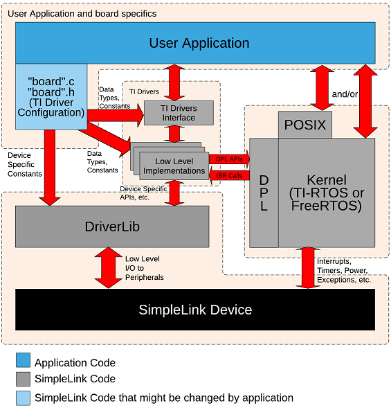
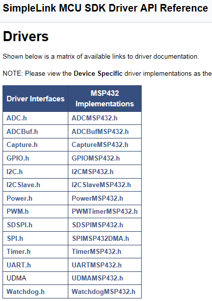
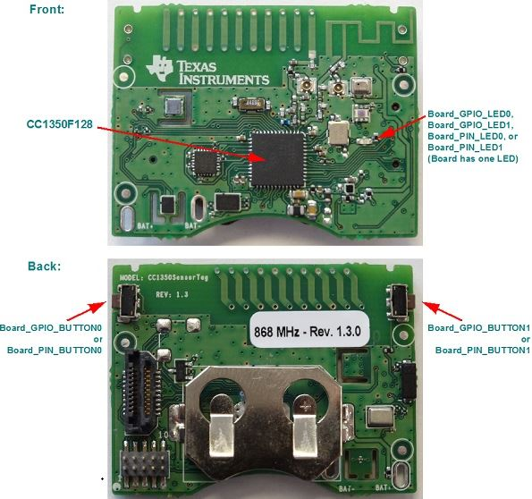

Introduction
This workshop will dive into the details on how to configure TI Drivers for all SimpleLink Devices. We'll use these different devices in this workshop but the concepts are the same for all TI Drivers on all SimpleLink devices.
The TI Drivers are divided into two levels
- TI Driver Interface: The TI Drivers interface contain the APIs, data structures and macros that the application uses. These interfaces are the same for all SimpleLink Devices.
Low Level Implementations (LLI): The LLI Drivers contains the bulk of the driver implementation. It contains device/peripheral data structures and macros that are used when configuring the driver instance. The application does not call LLI APIs directly. The TI Driver Interface APIs call LLI APIs. This allows multiple types of driver implementations for a single peripheral (e.g. both UART w/ DMA and UART w/o DMA implementations can exist in an application).

Terminology
Driver Instance: An driver instance is a single element in the driver config structure (e.g. UART_config). Generally a driver instance maps to a single hardware peripheral.
The two level driver approach allows an application to use two different driver implementations for the peripherals. For example, the application can use a DMA based UART driver on UART instance X and a non-DMA based UART driver on UART instance Y at the same time.
The TI Drivers use the Data Porting Layer (DPL) to communicate with the RTOS kernel. The application should not use DPL directly.
Here's what we'll learn:
- Overview of TI Driver configuration
- How to use a TI Driver instance
- How to remove a TI Driver instance (via a lab)
- How to add a TI Driver instance
Prerequisites
Recommended Background Reading
Software
- This tutorial can be done 100% with a web browser in CCS Cloud. However, the exercises can also be completed using desktop/offline tools as well.
Hardware
- Any SimpleLink LaunchPad Development Kits
Board files
These are the five different files used in every TI Driver example. We use the term "board" generically here. The actual names of the files correspond to the name of the board (except for Board.h and Board.html). We when talk about the generic "board", it will be in itialics. For example board.c could be CC3220S_LAUNCHXL.c, MSP_EXP432P401R.c, etc.
- board.c: Source file with the TI Drivers configuration.
- board.h: Header file with the TI Drivers configuration.
- board.cmd/.lds/.icf: Linker file for the board. The .cmd is for CCS (TI) compiler, .lds is for GCC compiler and .icf is for IAR compiler.
- Board.html: Picture of the board & description of the LEDs, buttons, etc.
- Board.h: Contains macros that allow driver examples to be portable across other boards. For example instead of using MSP_EXP432P401R_GPIO_LED_ON, the application uses Board_GPIO_LED_ON.
Important Note
As noted above, these files are shipped with every driver example. These files are the same for all examples for a specific board. So every MSP_EXP432P401R.c in all SimpleLink MSP43x SDK examples are the same.
We expect the user to change these files as needed (especially for their custom boards). However the SimpleLink SDK treats these files as released code. We try to avoid changing these files between releases. If a change is required (e.g. to add a new feature), the change will be noted in the release notes.
Missing Configuration
Not all peripherals are configured in the board files supplied in the examples. For some devices, it is impossible to configure all the peripherals since some are mutally exclusive (e.g. UARTx and I2Cy might share the same pin). Note: some of the board.c files have #if's to allow changing the configuration.
Let's look at each one of these files in more detail.
board.c
The board.c file contains all the TI Drivers configuration code. While the following will try to cover the main points, please refer to the TI Drivers Runtime APIs in the Documentation Overview. Here you will get more device/peripheral specific information.

The driver configuration is broken into four parts.
- LLI driver specific objects
- LLI driver specific hardware attributes
- TI Driver configuration structure
- TI Driver instance count
These (except the objects) can be a const and therefore can be placed in flash. The drivers treat these as read-only. The application cannot modify these once the drivers init call is made.
Let's look at each one of these in more detail...
LLI driver specific objects: These structures provide the memory to the driver. This allows the drivers to avoid memory allocation. The application should not initialize or access these directly. They are used strictly in the driver modules. Here is an example (note: CC1350STK_I2CCOUNT constant will be discussed in the board.h section below).
I2CCC26XX_Object i2cCC26xxObjects[CC1350STK_I2CCOUNT];CC1350STK.c
These object must be in RAM since they are modified by the drivers.
LLI driver specific hardware attributes: These structures provide the configuration to the driver. Typically the macros are from the source/ti/devices/specific device/driverlib and the LLI Driver's header files. The drivers take this information and configure the peripherals as requested. The actual fields in this structure are driver specific. Please refer to the LLI Driver documentation for more details about specific fields.
const I2CCC26XX_HWAttrsV1 i2cCC26xxHWAttrs[CC1350STK_I2CCOUNT] = { { .baseAddr = I2C0_BASE, .powerMngrId = PowerCC26XX_PERIPH_I2C0, .intNum = INT_I2C_IRQ, .intPriority = ~0, .swiPriority = 0, .sdaPin = CC1350STK_I2C0_SDA0, .sclPin = CC1350STK_I2C0_SCL0, } };CC1350STK.c
Driver Configuration Structure: This is the structure that knits the configuration pieces together. The driver module is expecting this structure. You see that the above objects and hardware attributes are passed in here. The fxnTablePtr is used by the TI Driver interface to know what LLI driver to use. For a list of the names of the LLI drivers, please refer to the TI Drivers Runtime APIs (as shown on the Recommended Reading above).
const I2C_Config I2C_config[CC1350STK_I2CCOUNT] = { { .fxnTablePtr = &I2CCC26XX_fxnTable, .object = &i2cCC26xxObjects[CC1350STK_I2C0], .hwAttrs = &i2cCC26xxHWAttrs[CC1350STK_I2C0] }, };CC1350STK.c
Driver Instance Count: This is the variable that tells the driver how many instances for a specific driver exists.
const uint_least8_t I2C_count = CC1350STK_I2CCOUNT;CC1350STK.c
board.h
This file includes the enums and constants from the board.c file. The last enum in this (CC1350STK_I2CCOUNT in this case) will determine the length of arrays in the following sections.
typedef enum CC1350STK_I2CName {
CC1350STK_I2C0 = 0,
CC1350STK_I2CCOUNT
} CC1350STK_I2CName;
...
#define CC1350STK_I2C0_SDA0 IOID_5
#define CC1350STK_I2C0_SCL0 IOID_6
#define CC1350STK_I2C0_SDA1 IOID_8
#define CC1350STK_I2C0_SCL1 IOID_9
CC1350STK.h
board.cmd/.lds/.icf
This file is the linker file for the example. This file contains the memory segments and data/code sections definitions.
SECTIONS
{
.text : > MAIN
.TI.ramfunc : {} load=MAIN, run=SRAM_CODE, table(BINIT)
.const : > MAIN
.cinit : > MAIN
.pinit : > MAIN
.data : > SRAM_DATA
.bss : > SRAM_DATA
.sysmem : > SRAM_DATA
/* Heap buffer used by HeapMem */
.priheap : {
__primary_heap_start__ = .;
. += HEAPSIZE;
__primary_heap_end__ = .;
} > SRAM_DATA align 8
.stack : > SRAM_DATA (HIGH)
}
MSP_EXP432P401R_TIRTOS.cmd
Please note that the Driver examples use __primary_heap_start__ and __primary_heap_end__ to size the system heap.
Board.h
This file is used to map board.h macros/APIs/etc. to generic Board macros/APIs/etc. This allows an example to work on multiple devices.
#define Board_I2C0 CC1350STK_I2C0
#define Board_I2C0_SDA1 CC1350STK_I2C0_SDA1
#define Board_I2C0_SCL1 CC1350STK_I2C0_SCL1
#define Board_I2C_TMP CC1350STK_I2C0
Board.h on CC1350STK
Board.html
This file contains a picture of the board and descriptions that are helpful with the examples. For example for the CC1350STK board:

Using a driver instance
While this is covered in more detail in the TI Drivers Overview workshop, we'll cover it briefly here to tie everything together.
The driver module must be initialized before the driver can be used. For example, you must have I2C_config and I2C_count setup and then
call I2C_init(). The driver init function can be called in main() or in a thread. The init call simply sets up the software in the module.
To open an instance, use the enum from the Board.h file. For example
UART_Handle uart;
uart = UART_open(Board_UART0, NULL); /* NULL parameter structure means to use the default values */
Internally in the TI Driver, the Board_UART0 value is used to index into Driver configuration array (e.g. UART_config) to get the
function table, object, and HwAttrs to be used.
Lab: Removing a driver instance
All the launchpad (and some of the sensor tags) have at least two SPI instances defined in the board files. These are present to allow the SPI Loopback example to work. Let's remove the second SPI instance to reduce the footprint of the application. We'll use the CC1350_LAUNCHXL as an example, but the concepts are the same for all boards.
Task 1: Import Empty and build it
Please import the empty project CC1350_LAUNCHXL. We're assuming you've done enough of these workshops to know how to import an example. If you don't please refer to TI Drivers Project Zero for instruction.
Task 2: Add in SPI_init()
Since the empty project does not use SPI and compilers are smart, none of SPI driver code is pulled in. Let's uncomment the SPI_init() call in mainThread() in empty.c. Now the SPI code is pulled in. Let's build the project and look at the empty_CC1350_LAUNCHXL_tirtos_ccs.map file to see how much memory is being used. (Note: your mileage may vary based on compiler, options, version of SDK, etc.).
name origin length used unused attr fill
---------------------- -------- --------- -------- -------- ---- --------
FLASH 00000000 00020000 000043e4 0001bc1c R X
SRAM 20000000 00005000 00000f71 0000408f RW X
empty_CC1350_LAUNCHXL_tirtos_ccs.map
Task 3: Remove the SPI instance from Board.h
Comment out the second instance as shown
#define Board_SPI0 CC1350_LAUNCHXL_SPI0
//#define Board_SPI1 CC1350_LAUNCHXL_SPI1
Board.h
Task 4: Remove the SPI instance from CC1350_LAUNCHXL.h
Comment out the second instance as shown
typedef enum CC1350_LAUNCHXL_SPIName {
CC1350_LAUNCHXL_SPI0 = 0,
//CC1350_LAUNCHXL_SPI1,
CC1350_LAUNCHXL_SPICOUNT
} CC1350_LAUNCHXL_SPIName;
CC1350_LAUNCHXL.h
Task 5: Remove the SPI instance from CC1350_LAUNCHXL.c
Comment out the second instance as shown
const SPICC26XXDMA_HWAttrsV1 spiCC26XXDMAHWAttrs[CC1350_LAUNCHXL_SPICOUNT] = {
{
.baseAddr = SSI0_BASE,
.intNum = INT_SSI0_COMB,
.intPriority = ~0,
.swiPriority = 0,
.powerMngrId = PowerCC26XX_PERIPH_SSI0,
.defaultTxBufValue = 0,
.rxChannelBitMask = 1<<UDMA_CHAN_SSI0_RX,
.txChannelBitMask = 1<<UDMA_CHAN_SSI0_TX,
.mosiPin = CC1350_LAUNCHXL_SPI0_MOSI,
.misoPin = CC1350_LAUNCHXL_SPI0_MISO,
.clkPin = CC1350_LAUNCHXL_SPI0_CLK,
.csnPin = CC1350_LAUNCHXL_SPI0_CSN
},
// {
// .baseAddr = SSI1_BASE,
// .intNum = INT_SSI1_COMB,
// .intPriority = ~0,
// .swiPriority = 0,
// .powerMngrId = PowerCC26XX_PERIPH_SSI1,
// .defaultTxBufValue = 0,
// .rxChannelBitMask = 1<<UDMA_CHAN_SSI1_RX,
// .txChannelBitMask = 1<<UDMA_CHAN_SSI1_TX,
// .mosiPin = CC1350_LAUNCHXL_SPI1_MOSI,
// .misoPin = CC1350_LAUNCHXL_SPI1_MISO,
// .clkPin = CC1350_LAUNCHXL_SPI1_CLK,
// .csnPin = CC1350_LAUNCHXL_SPI1_CSN
// }
};
const SPI_Config SPI_config[CC1350_LAUNCHXL_SPICOUNT] = {
{
.fxnTablePtr = &SPICC26XXDMA_fxnTable,
.object = &spiCC26XXDMAObjects[CC1350_LAUNCHXL_SPI0],
.hwAttrs = &spiCC26XXDMAHWAttrs[CC1350_LAUNCHXL_SPI0]
},
// {
// .fxnTablePtr = &SPICC26XXDMA_fxnTable,
// .object = &spiCC26XXDMAObjects[CC1350_LAUNCHXL_SPI1],
// .hwAttrs = &spiCC26XXDMAHWAttrs[CC1350_LAUNCHXL_SPI1]
// },
};
CC1350_LAUNCHXL.c
Task 6: Build and compare size
Let's build and look at the mapfile again.
name origin length used unused attr fill
---------------------- -------- --------- -------- -------- ---- --------
FLASH 00000000 00020000 000043bc 0001bc44 R X
SRAM 20000000 00005000 00000e95 0000416b RW X
empty_CC1350_LAUNCHXL_tirtos_ccs.map
It went down (as expected). We saved 40 bytes of flash and 220 bytes of RAM.
Adding a UART
Adding a driver instance is basically the opposite of removing one. Let's add another UART instance (say we looked at the data sheet and determined UARTA3 was a good choice based on pin conflicts) to the MSP432.
First let's update the MSP_EXP432P401R.h file. Add the new instance (MSP_EXP432P401R_UARTA3) into the UART enum definition.
typedef enum MSP_EXP432P401R_UARTName { MSP_EXP432P401R_UARTA0 = 0, MSP_EXP432P401R_UARTA2, MSP_EXP432P401R_UARTA3, /* new one!! */ MSP_EXP432P401R_UARTCOUNT } MSP_EXP432P401R_UARTName;The MSP_EXP432P401R_UARTCOUNT value will increase automatically.
Second let's update the MSP_EXP432P401R.c file.
Since we increased
MSP_EXP432P401R_UARTCOUNTin the MSP_EXP432P401R.h file, we don't need to manually adjust any arrays. We will need to fill in the HwAttrs and MSP432_config arrays though.Look at the data sheet to determine which pins you want to use for the UARTA3. This dictates settings below. For more specific details about each field, please refer to TI Drivers Runtime APIs (as shown on the Recommended Reading above).
For this example, the second entry was cut and pasted to create the third element of the array. Comment on the lines below denote which fields needed to be changed (and where the value was obtained from).
const UARTMSP432_HWAttrsV1 uartMSP432HWAttrs[MSP_EXP432P401R_UARTCOUNT] = { ... .txPin = UARTMSP432_P3_3_UCA2TXD }, /* existing */ { /* new */ .baseAddr = EUSCI_A3_BASE, /* obtained from device specific header file in driverlib */ .intNum = INT_EUSCIA3, /* obtained from driverlib/interrupt.h */ .intPriority = (~0), .clockSource = EUSCI_A_UART_CLOCKSOURCE_SMCLK, .bitOrder = EUSCI_A_UART_LSB_FIRST, .numBaudrateEntries = sizeof(uartMSP432Baudrates) / sizeof(UARTMSP432_BaudrateConfig), .baudrateLUT = uartMSP432Baudrates, .ringBufPtr = uartMSP432RingBuffer[MSP_EXP432P401R_UARTA3], /* Use the correct index! */ .ringBufSize = sizeof(uartMSP432RingBuffer[MSP_EXP432P401R_UARTA3]), /* Use the correct index! */ .rxPin = UARTMSP432_P9_6_UCA3RXD, /* from UARTMSP432 doxygen (with help from the data sheet) */ .txPin = UARTMSP432_P9_7_UCA3TXD /* from UARTMSP432 doxygen (with help from the data sheet) */ }Now the UART_config needs the new instance filled in with the objects, hardware attrs and function table. Again cut/paste the second entry to create the third element of the array and adjust accordingly.
const UART_Config UART_config[MSP_EXP432P401R_UARTCOUNT] = { { .fxnTablePtr = &UARTMSP432_fxnTable, .object = &uartMSP432Objects[MSP_EXP432P401R_UARTA0], .hwAttrs = &uartMSP432HWAttrs[MSP_EXP432P401R_UARTA0] }, { .fxnTablePtr = &UARTMSP432_fxnTable, .object = &uartMSP432Objects[MSP_EXP432P401R_UARTA2], .hwAttrs = &uartMSP432HWAttrs[MSP_EXP432P401R_UARTA2] }, { /* New entry */ .fxnTablePtr = &UARTMSP432_fxnTable, .object = &uartMSP432Objects[MSP_EXP432P401R_UARTA3], /* Use the correct index! */ .hwAttrs = &uartMSP432HWAttrs[MSP_EXP432P401R_UARTA3] /* Use the correct index! */ } };
Add the new UART into Board.h. You can give whatever name you like, but for boring consistency...
#define Board_UART0 MSP_EXP432P401R_UARTA0 #define Board_UART1 MSP_EXP432P401R_UARTA2 #define Board_UART2 MSP_EXP432P401R_UARTA3 /* Added UART! */Can now call UART_open(Board_UART2, ¶ms) to get the handle and start communicating with UARTA3 on the MSP432 device.
This work is licensed under a Creative Commons Attribution-NonCommercial-NoDerivatives 4.0 International License.